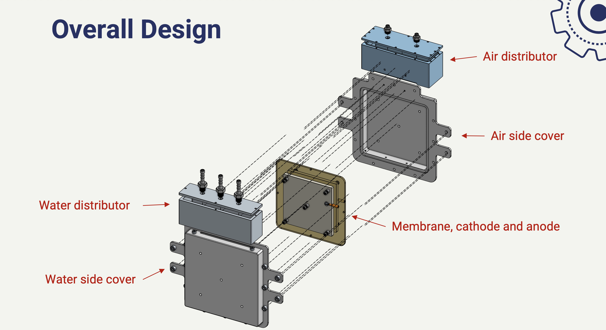
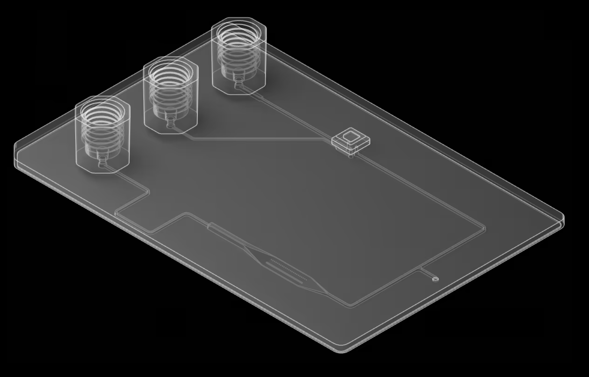

Engineering Portfolio
Bioelectrochemical Reactor
I designed a prototype bioelectrochemical reactor to convert concentrated wastewater and air into electricity.
Vision Valve
I developed test methods to successfully validate vision sorting equipment, increasing our yield from 50% to >90% and more than doubling our throughput.

Microfluidic Device Manufacturing Equipment
I currently work on designing, testing, and optimizing the next generation of microfluidic device manufacturing equipment.
